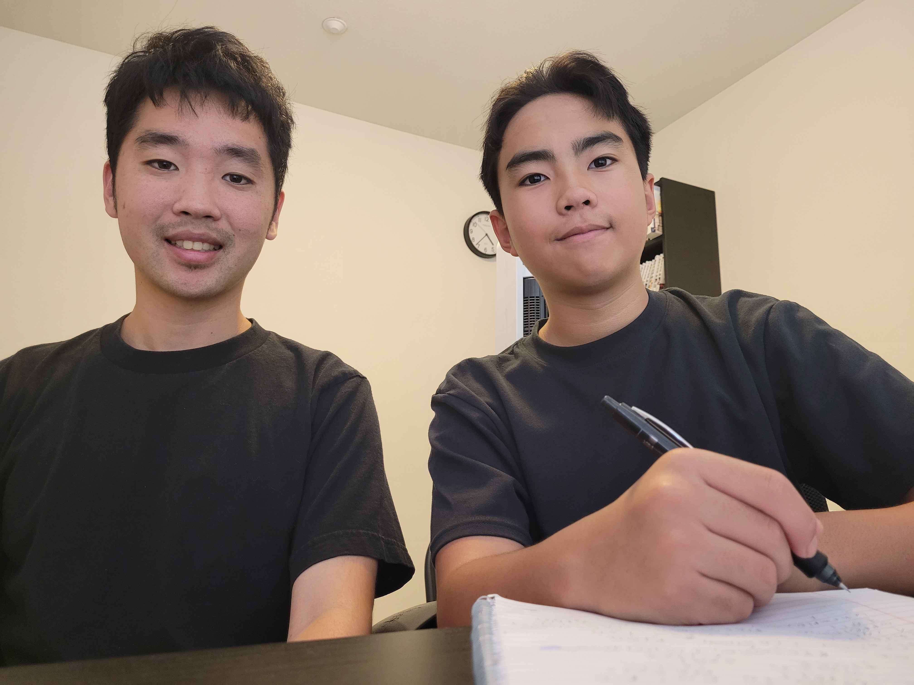

Why You Should Do 1-on-1 Tutoring

As someone deeply committed to personalized learning, I’ve found that 1-on-1 tutoring offers a level of depth, responsiveness, and emotional safety that group settings often struggle to match. While group tutoring can foster collaboration and shared learning, it rarely allows for the kind of real-time diagnostic work and tailored personalization that I believe are essential for meaningful progress.
🎯 Precision Over Generalization
In a 1-on-1 session, every minute is focused on the learner’s unique needs. I can identify root causes of confusion, adapt my approach instantly, and create strategies that actually stick. There’s no need to dilute the lesson to accommodate multiple learning styles or pace mismatches. Instead, we dive deep whether it’s breaking down a math concept, troubleshooting a writing block, or building confidence in tech skills.
🧠 Real-Time Adaptation
Group tutoring often relies on pre-planned content and generalized pacing. But learning isn’t linear. In 1-on-1 sessions, I can pivot on the spot using analogies, visuals, or micro-goals tailored to the student’s cognitive and emotional state. If frustration arises, we pause and reset. If curiosity sparks, we chase it. This kind of flexibility is nearly impossible in a group format.
🤝 Emotional Safety and Trust
Many learners, especially, those who’ve struggled in traditional classrooms need a space where they can be vulnerable without fear of judgment. 1-on-1 tutoring creates that space. It’s not just about academics; it’s about building trust, validating effort, and helping students reclaim their confidence. In group settings, social dynamics can get in the way competition, comparison, and all of these could stifle growth.
🔍 Collaborative Problem-Solving
I thrive on co-creating solutions with my students. In a 1-on-1 setting, we’re partners in learning. We reflect, iterate, and build a shared language around challenges. That kind of collaboration is hard to replicate in a group, where time and attention are divided.
🧩 Skills AI Can’t Teach
In a world where AI can generate answers instantly, students still need the one thing technology can’t replace: the ability to think for themselves. 1‑on‑1 tutoring gives students the space to slow down, reason through problems, and build real academic independence skills that get lost when learning becomes “ask the app, copy the answer.”
I focus on teaching students how to learn the “old” way:
- breaking down problems step‑by‑step
- understanding concepts instead of memorizing them
- building strong study habits
- developing clarity in writing and communication
- learning how to check AI’s work instead of blindly trusting it
AI can support learning, but it can’t build a student’s mind. That’s where personalized tutoring still matters.